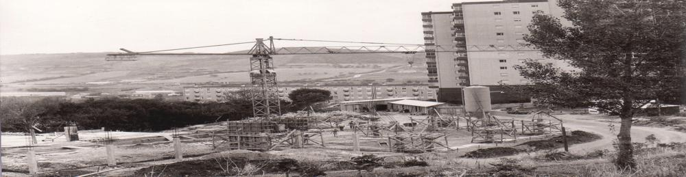

<!DOCTYPE html>
<html lang="PT"></html>

<head>
	<title>† Paróquia-SAC</title>

	<!-- Metas -->
	<meta charset="utf-8">
	<meta name="viewport" content="width=device-width, initial-scale=1.0">
	<meta name="description" content="Paróquia de Santo Antonio dos Cavaleiros">
	<meta name="keywords" content="paróquia de sac, sac">
	<meta name="author" content="RMoreno">
		
	<!-- Styles -->
	<link rel="icon" href="static/assets/images/favicon.ico" type="image/x-icon">
	<link rel="shortcut icon" href="static/assets/images/favicon.ico" type="image/x-icon"/>
	<link rel="stylesheet" href="static/css/bootstrap.css" type="text/css" media="screen">
	<link rel="stylesheet" href="static/css/bootstrap-responsive.css" type="text/css" media="screen">    
	<link rel="stylesheet" href="static/css/supersized.core.css" type="text/css" media="screen">  
	<link rel="stylesheet" href="static/css/style.css" type="text/css" media="screen">
	<link rel="stylesheet" href="static/css/camera.css" type="text/css" media="screen">

	<!-- JS -->
	<script type="text/javascript" src="static/js/jquery.js"></script>  
	<script type="text/javascript" src="static/js/jquery.easing.1.3.js"></script>
	<script type="text/javascript" src="static/js/superfish.js"></script>
	<script type="text/javascript" src="static/js/jquery.ui.totop.js"></script>
	<script type="text/javascript" src="static/js/supersized.core.3.2.1.js"></script>
	<script type="text/javascript" src="static/js/camera.js"></script>
	<script type="text/javascript" src="static/js/jquery.mobile.customized.min.js"></script>
	<script type="text/javascript" src="static/js/camera.wrap.js"></script>
	

</head>

<body class="main">
	<div id="main">
		<div id="inner">
			
			<div class="container">
				<div class="row">
					<div class="span12">
						<header class="clearfix">
							<div class="logo_wrapper">
								<!-- <a href="index.html" class="logo"> -->
																		
								</a>							
							</div>
						</header>	
					</div>	
				</div>	
			</div>
			
			<div class="top1">
				<div class="container">
					<div class="row">
						<div class="span12">
							<div class="navbar navbar_">
								<div class="navbar-inner navbar-inner_">
									<a class="btn btn-navbar btn-navbar_" data-toggle="collapse" data-target=".nav-collapse_">
										<span class="icon-bar"></span>
										<span class="icon-bar"></span>
										<span class="icon-bar"></span>
									</a>
									<div class="nav-collapse nav-collapse_ collapse">
										<ul class="nav sf-menu clearfix">					
											<li><a href="index.html">Início</a></li>
											<li class="sub-menu sub-menu-1 active"><a>Paróquia<em></em></a>
												<ul>
													<li><a href="bio-pedromonteiro.html">Pároco</a></li>
													<li><a href="index-4.html">Conselho Pastoral</a></li>
													<li><a href="index-5.html">Conselho Económico</a></li>
													<li><a href="index-2.html">História</a></li>																		
												</ul>						
											</li>
											<li><a href="index-6.html">Acção Pastoral</a></li>
											<li><a href="index-3.html">Comunidade Carmelita</a></li>
											<li><a href="contactos.html">Contactos</a></li>
											<div style="padding-top: 20px;">	
    											<a href="mailto:paroquia.sac@mail.pt" target="_blank">
        											
    											</a>
    											<a href="https://www.facebook.com/paroquiasac#" target="_blank" class="social-icon">
        											
    											</a>
    											<a href="https://www.youtube.com/channel/UCJoe96Is6j8rYWz3oHnvGqA" target="_blank" class="social-icon">
        											
    											</a>
											</div>
										</ul>
									</div>
								</div>
							</div>	
						</div>	
					</div>	
				</div>

				<div id="slider2">
					
					
					<div class="txt1">História</div>
				</div>
			</div>

			<div class="top2">
				<div class="slogan">
					<div class="container">
						<div class="row">
							<div class="span9">
                                <h1 class="titulo_tabela">A Caminhada histórica da nossa Comunidade</h1>
                                	<div class="txt1">
    									<p><strong>1965</strong> — Início da construção do primeiro bairro com o nome de Santo António dos Cavaleiros.</p>
										<p><strong>1966</strong> — Início da construção do Bairro da Caixa.</p>
										<p><strong>1966</strong> — Primeiro “pau de fileira” numa casa do bairro (Rua Simão da Veiga).</p>
										<p><strong>1967</strong> — Entrega de casas aos primeiros moradores.</p>
										<p><strong>1968</strong> — Início das aulas da Escola Primária da Praceta D. Miguel I (atual Ginásio).</p>
										<p><strong>1969</strong> — Inauguração dos transportes públicos para Lisboa (Empresa Barraqueiro).</p>
										<p><strong>1969</strong> — Inauguração do Bairro da Caixa, parcialmente ocupado por desalojados das cheias de 1967.</p></section>
										<p><strong>1970</strong> — Início da construção da Flamenga.</p>
										<p><strong>1971</strong> — Primeiras celebrações da Eucaristia na “Exposição” (CTT).</p>
										<p><strong>1971</strong> — Batismo de Francisco Barreiros, primeira criança batizada no bairro.</p>
										<p><strong>1972</strong> — Inauguração da primeira capela católica no Bairro da Caixa.</p>
										<p><strong>1972</strong> — Criação do Vicariato Paroquial.</p>
										<p><strong>1972</strong> — Chegada dos Padres Carmelitas.</p>
										<p><strong>1972</strong> — Primeiro batismo após a criação do Vicariato.</p>
										<p><strong>1972</strong> — Primeira catequese organizada.</p>
										<p><strong>1972</strong> — Primeiro casamento no Vicariato.</p>
										<p><strong>1973</strong> — Primeiro funeral no Vicariato.</p>
										<p><strong>1973</strong> — Ereção canónica da Fábrica da Igreja Paroquial.</p>
										<p><strong>1975</strong> — Boletim Paroquial nº 0.</p>
										<p><strong>1977</strong> — Primeira festa popular em honra de Santo António.</p>
										<p><strong>1977</strong> — Falecimento do Pe. Henrique Seiger, O. Carm.</p>
										<p><strong>1977</strong> — Fundação do Agrupamento do Corpo Nacional de Escutas.</p>
										<p><strong>1978</strong> — Doação do terreno à Igreja Paroquial.</p>
										<p><strong>1978</strong> — Nova Capela do Parque das Laranjeiras.</p>
										<p><strong>1978</strong> — Primeira administração do Crisma no Vicariato.</p>
										<p><strong>1978</strong> — Fundação do núcleo das Guias de Portugal.</p>
										<p><strong>1978</strong> — Construção da Cidade Nova.</p>
										<p><strong>1979</strong> — Concurso para a construção da Igreja Paroquial.</p>
										<p><strong>1980</strong> — Bênção e lançamento da primeira pedra da Igreja Matriz.</p>
										<p><strong>1980</strong> — Assinatura do contrato de construção da Igreja.</p>
										<p><strong>1981</strong> — Fundação da Legião de Maria.</p>
										<p><strong>1981</strong> — Estreia do Coro Paroquial.</p>
										<p><strong>1982</strong> — Inauguração e sagração da Igreja Matriz.</p>
										<p><strong>1982</strong> — Aprovação dos Estatutos do Centro Cultural e Social.</p>
										<p><strong>1983</strong> — Fundação oficial da Paróquia de Santo António dos Cavaleiros.</p>
										<p><strong>1984</strong> — Criação da Confraria de Nossa Senhora do Carmo.</p>
										<p><strong>1988</strong> — Primeiro Congresso Paroquial.</p>
										<p><strong>1989</strong> — Criação de Santo António dos Cavaleiros como freguesia.</p>
										<p><strong>1990</strong> — Aprovação do Conselho Pastoral da Paróquia.</p>
										<p><strong>1990</strong> — Criação da Juventude Carmelita.</p>
										<p><strong>1991</strong> — Elevação da freguesia a Vila.</p>
										<p><strong>1992</strong> — Visita Canónica do Padre Geral da Ordem do Carmo.</p>
										<p><strong>1994</strong> — Aprovação canónica da Confraria do Carmo.</p>
										<p><strong>1996</strong> — O Padre Vitalino Dantas é sagrado Bispo de Beja.</p>
										<p><strong>1998</strong> — Inauguração do novo edifício do Centro Social.</p>
										<p><strong>1999</strong> — As Irmãs da Virgem Maria do Monte Carmelo abrem casa na Paróquia.</p>
										<p align="center"><em>Pinharanda Gomes</em></p>
									</div>
								</div>	
							</div>	
						</div>
					</div>
				</div>
			</div>
			
			<footer>
				<div class="container">
					<div class="row">
						<div class="span12">
							<div class="bot1">
								<div class="row">
									<div class="span3">
										<div class="block1 pad_bottom">
											<div class="logo_wrapper2"><a href="index.html" class="logo2"></a></div>
											<br>
											<p>
												Avª. Francisco Pinto Pacheco,<br>
												Apartado 1071.<br>
												2661-901 Santo António dos Cavaleiros<br>
												Telephone: +351 21 988 43 66<br>
												E-mail: paroquiasacavaleiros@gmail.com<br>
											</p>
										</div>
									</div>
									<div class="span3">
										<div class="block2 pad_bottom">
											<div class="bot_title">Onde saber mais:</div>
											<ul class="ul0">
				  								<li><a href="servicos-secretaria.html">Secretaria Paroquial<br>(marcação de missas ou<br> outros assuntos)</a></li>	
											</ul>
										</div>
									</div>
									<div class="span3">
										<div class="block3 pad_bottom">
											<div class="bot_title">Informações</div>
											<ul class="ul0">
				  								<li><a href="catequese.html">† Catequese</a></li>
				  								<li><a href="liturgia-sacramentos-batismo.html">† Batismo</a></li>
				  								<li><a href="liturgia-sacramentos-matrimonio.html">† Matrimónio</a></li>
				  								<li><a href="liturgia-sacramentos-santauncao.html">† Santa Unção</a></li>
											</ul>
										</div>
									</div>
									<div class="span3">
										<div class="block4 pad_bottom">
											<div class="bot_title">Segue-nos</div>
											<ul class="ul_social">
				  								<li><a href="https://www.facebook.com/paroquiasac#"><span>Facebook</span></a></li>
				  								<li><a href="https://www.youtube.com/channel/UCJoe96Is6j8rYWz3oHnvGqA"><span>YouTube</span></a></li>
												<li><a href="https://www.instagram.com/paroquiasac/"><span>Instagram</span></a></li>
											</ul>
										</div>
									</div>
								</div>
							</div>	
							<div class="bot2">
								<div class="pad_bottom copyright" align="center">
									<div>Copyright © <span id="currentYear"></span> Paróquia de Santo António dos Cavaleiros <a class="copyright txt4" href="politicaprivacidade.html">Politica de Privacidade.</a></div>
									<script>
  										// This line finds the span and fills it with the current 4-digit year
  										document.getElementById('currentYear').textContent = new Date().getFullYear();
									</script>
								</div>
							</div>	
						</div>	
					</div>	
				</div>
			</footer>
		
		</div>	
	</div>
	<!-- JS -->
	<script type="text/javascript" src="static/js/bootstrap.js"></script>

</body>

</html>
